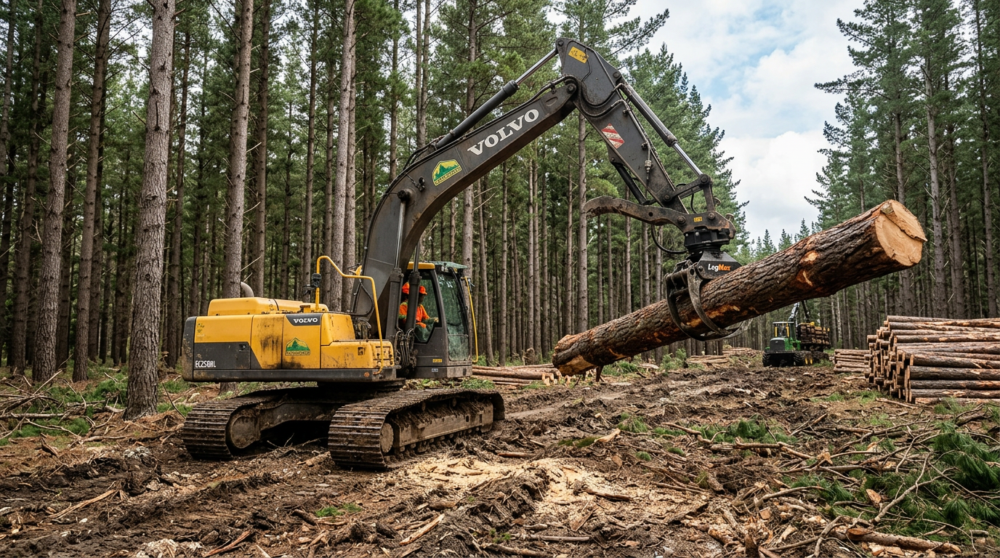
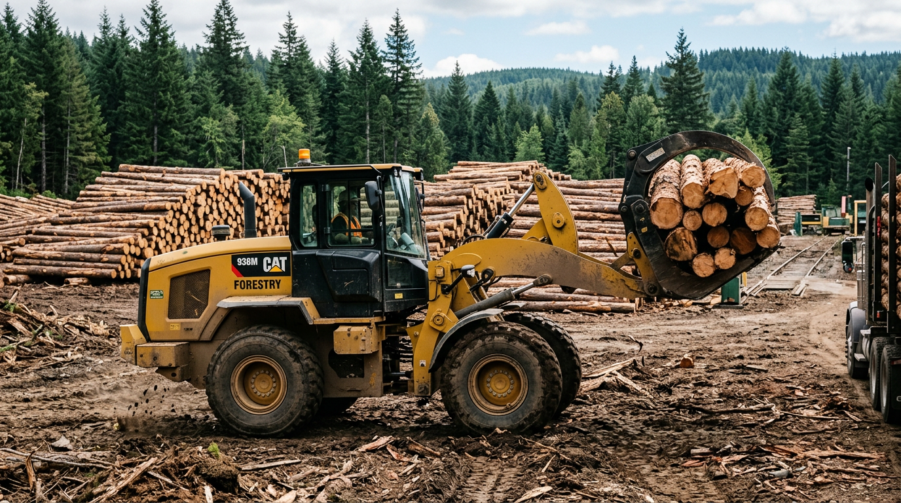
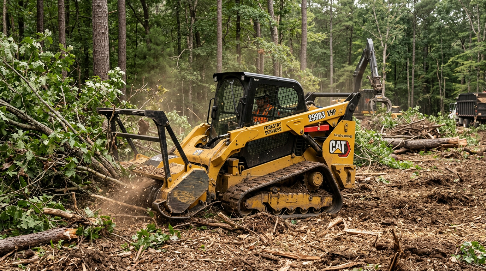
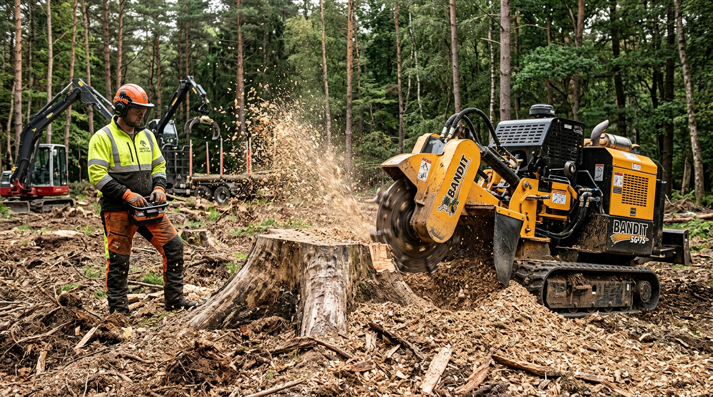
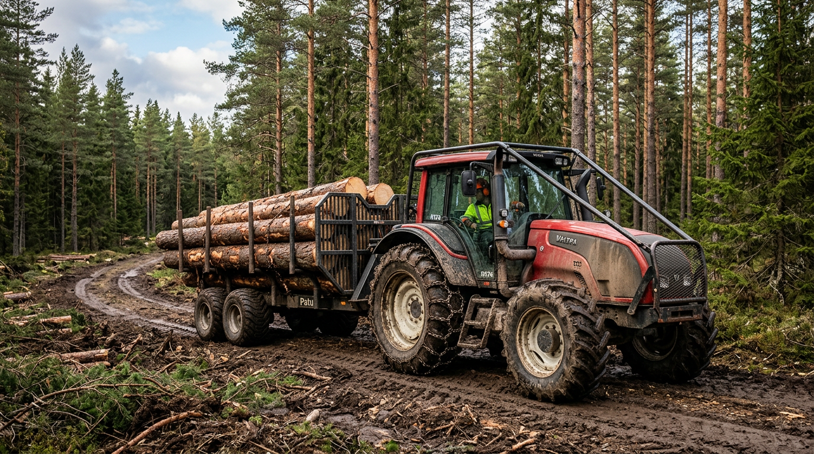

Loggers and forestry operations rely on financing to purchase skidders, harvesters, loaders, and trucks—and to cover fuel, labor, and seasonal operating costs. Axiant Partners connects forestry businesses with lenders offering equipment financing, SBA loans, working capital, and more. Whether you run a logging crew, sawmill, or timber operation, we match you with financing that fits your operation and cash flow cycles.
Industry Overview
Forestry businesses face high capital requirements for harvesters, skidders, loaders, and haul trucks. Seasonal and weather-dependent harvest cycles create cash flow gaps between equipment costs, labor, and timber sales. Many loggers and forestry operators need financing to acquire or replace equipment without draining reserves. Working capital helps cover fuel, crew payroll, and maintenance during harvest season when income is tied to mill payments and log sales.
Harvesters and skidders can cost $150,000–$500,000 or more per unit. Equipment financing and working capital loans help forestry businesses grow their fleet and manage operating expenses. SBA loans support longer-term needs like land acquisition, sawmill equipment, and business expansion, while lines of credit provide flexibility for fuel, repairs, and payroll.

How Forestry Businesses Use Financing
Loggers and forestry operations use financing to fund harvesters, skidders, loaders, and haul trucks. Many finance excavators, wheel loaders, and skid steers through equipment loans—spreading the cost of $100,000+ machines over their productive life. Working capital helps cover fuel, crew payroll, and maintenance during harvest season when log sales and mill payments lag. SBA loans support land acquisition, sawmill equipment, and business acquisition.
Seasonal harvest cycles and weather create natural cash flow gaps. A logging contractor might use a line of credit to fund equipment and crew ahead of peak season. A timber operation might finance a new harvester or loader to increase production. Whether expanding capacity, upgrading machinery, or managing seasonal expenses, forestry businesses use financing to keep operations running and growing.
Forestry Business Financing Options
Forestry operations need financing for harvesters, loaders, trucks, and operating costs. Whether you're searching for forestry equipment financing, logging business loans, or forestry working capital, the right product depends on your use of funds and timeline.
Common Forestry Equipment That Businesses Finance
Forestry operations frequently finance harvesters, loaders, and heavy equipment. Below are common types, typical cost ranges, and why businesses finance them.

Excavators
Excavators handle land clearing, road building, and loading. New models range from roughly $80,000 to $500,000 or more. Many forestry operations finance excavators to add capacity or replace aging units.
How to finance an excavator for logging
Wheel Loaders
Wheel loaders move logs, load trucks, and handle bulk materials at landing sites. They typically cost $80,000–$400,000. Financing helps forestry operations add or replace loaders for increased production.
How to finance a wheel loader for logging
Skid Steers
Skid steers handle grading, material handling, and attachments for land clearing and site prep. They typically cost $25,000–$75,000. Financing helps forestry operations add versatile equipment.
How to finance a skid steer
Stump Grinders
Stump grinders remove tree stumps after harvest. Tow-behind and self-propelled units range from roughly $5,000 to $30,000 or more. Financing helps forestry and land-clearing operations add stump removal.
How to finance a stump grinder
Tractors
Tractors pull skidders, run implements, and support land management. New models range from about $40,000 to $150,000 or more. Financing spreads the cost over the equipment's productive life.
How to finance a tractor for forestry
Log Trucks & Trailers
Log trucks and trailers haul timber to mills. Trucks range from about $80,000 to $200,000 or more. Financing helps forestry operations add or replace haul capacity.
How to finance a log truck
Bucket Trucks
Bucket trucks (aerial lift trucks) support tree trimming, arborist work, and utility maintenance in wooded areas. New units range from about $80,000 to $200,000 or more depending on reach height. Financing helps forestry and tree service operations add or replace aerial capacity.
How to finance a bucket truckEquipment Financing Guides for Forestry
Forestry operations considering equipment loans often ask these questions. Our guides cover credit requirements, used equipment, rates, and approval timelines. For equipment-specific guides, see Equipment by Type. For a full overview, see Equipment Financing.
Apply for Forestry Business Financing
Forestry operations need financing that fits harvest cycles and cash flow. Axiant Partners connects loggers and forestry businesses with lenders that offer equipment loans, working capital, SBA loans, and more. Submit your information once and we match you with programs suited to your business profile. Get matched with a lender or contact our team to discuss your needs.